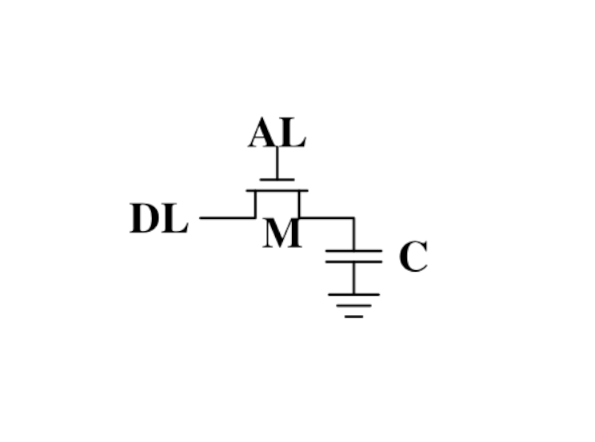
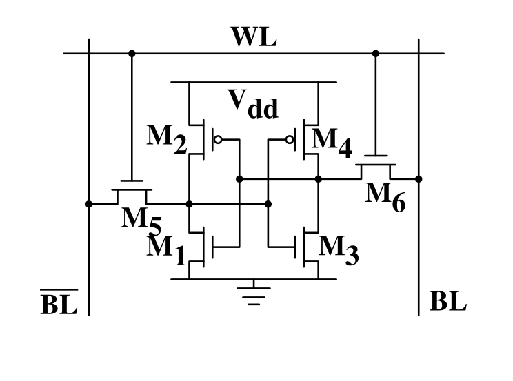
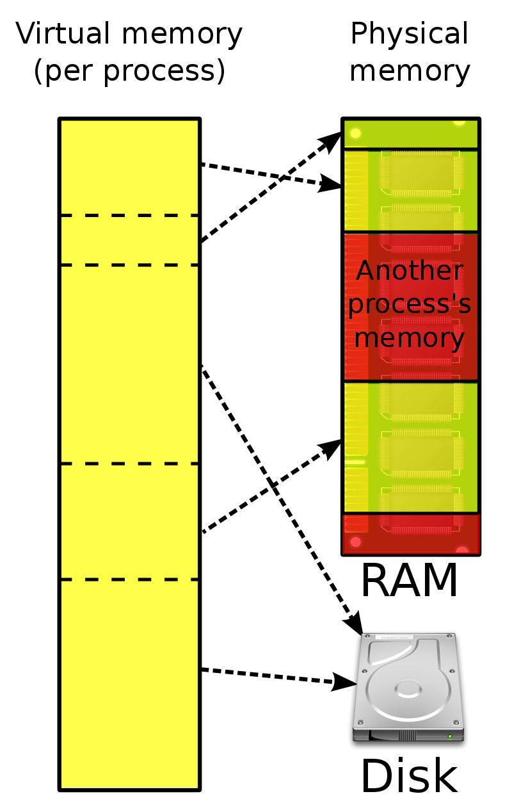

TODO: sync.Pool
TODO: pprof for memory.
Memory
RAM
- RAM = Random Access Memory
- Huge, sequential line of individual memory cells
- Usually can only be addressed in pages
- Memory controller that handles the actual interaction.
- Two major types: Static RAM (SRAM) vs Dynamic RAM (DRAM)
SDRAM = Synchronous DRAM
DDR-SDRAM = Double Data Rate SDRAM
DRAM - one bit, please

Dynamic sounds good, doesn't it?
- Very simple and cheap to produce.
- High density (many cells per area)
- Needs to be refreshed constantly (64ns or so)
Fun fact: DRAM enables a hardware-based security attack: ROWHAMMER.
Changing a row of DRAM cells can, if done very often, switch a nearby row.
This can be used to change data like "userIsLoggedIn".
SRAM - one bit, please

- Very fast. 10x speed of DRAM
- No refresh required.
- Low power consumption
- Expensive, not so high density
Why use DRAM at all?
- Because it's cheap, and we need tons of it.
- Main memory is all DRAM.
- Caches (L1-L3) are SRAM.
- A lightbulb is maybe OSRAM (Sorry.)
So basically...
again, hardware is at fault
and instead of fixing it with some Pfiffikus
we software devs have to cope with slow main memory.
NUMA
Is the access to all memory offsets equally fast?
- Not if you have more than one CPU!
- Every CPU gets 1/nth of the memory.
- Every CPU can access the completely memory.
- Non-local access is costly.
NUMA - non uniform memory access
Linux is NUMA very well capable and that's why it's such a popular server operating system.
Or one of the reasons at least.
How the heck does this stuff relate to me?
Not so much on a daily basis, to be fair. But:
- Memory allocations are expensive.
- Strategies to make less/smaller allocations help performance
- Requires sadly an understanding how the OS handles memory.
The stack & heap #2
Stack is...
- ...cleaned up automatically on return
- ...bound to a function call
- ...preferred if possible.
- ...can be reasoned about during compile time
- ...good for small amounts of data.
Heap is...
- ...needs to be explicitly requested
- ...needs to be explititly cleaned up
- ...can be used until freed.
- ...should be used when required.
- ...usually required for a lot of data.
The stack & heap #3
Go is clever and hides this from you via
escape analysis:
func f() { v := 3; return &v }
func main() {
fmt.Println(f())
}$ go build -gcflags="-m" .
./main.go:3:2: moved to heap: v
The more you allocate on the heap, the more pressure you put on the
memory bookkeeping and the garbage collector.
Performance tip: Avoid variables escaping to the heap:
- Avoid using pointers if unnecessary
- Prefer return by value if value is small (< 128 byte) (small copy is faster than GC)
- Don't overreact here though. Don't make your APIs ugly just because you know this little fact. Use this in hot loops. AFTER measurement.
Never heard of this stuff, why should I care?
Difference is important in C
Well, you're lucky enough that your compiler does it for you
Or you're unlucky enough to use python where all hope is forlorn
Detour: What is a StackOverflow?
Why using the stack only for small data if you can also use it for somewhat dynamic allocations?
Because stack size is limited (on linux about 8MB, but don't rely on that)
How can you hit this limit?
- By recursion - lots of nested stacks.
- By running over the extents of a buffer (in C)
See example: stackoverflow.
GC pressure, locality and memory management
Prefer this:
m := make(map[string]someStruct)
over:
m := make(map[string]*someStruct)
- Way less memory in total
- Data is packed together (good for caching!)
- Less work for the GC and the allocator to do
- Pointers give you more potential to fuck up.
noptr 577.7 ns/op 336 B/op 2 allocs/op
ptr 761.4 ns/op 384 B/op 10 allocs/op
(The 10 will increase with input! Longer runs will cause more GC for the ptr case)
Virtual memory

- The physical memory of a system is splitted up into 4k pages.
- Each process maintains a virtual memory mapping table, mapping
from the virtual range of memory to physical memory.
- Address translation is handled efficiently by the MMU
Wait, those addresses I saw earlier... are those the addrs in RAM?
Hopefully not, because otherwise you could somehow find out where the OpenSSH
server lives in memory and steal it's keys. For security reasons it must look
for each process like he's completely alone on the system. What you saw above
are virtual memory addresses and they stay very similar on each run.
The concept how this achieved is called "virtual memory" and it's probably one of
the more clever things we did in computer science.
Virtual memory implementation
- Each process has a list of page tables mapping virtual to physical memory ("page table")
- On process start this table is filled with a few default kilobytes of mapped pages
(the first few pages are not mapped, so dereferencing a NULL pointer will always crash)
- When the program first accesses those addresses the CPU will generate a page fault, indicating
that there is no such mapping. The OS receives this and will find a free physical page, map
it and retry execution. If another page fault occurs the OS will kill the process with SIGSEGV.
Virtual memory advantages
- Pages can be mapped only once it is needed (CoW)
- Processes can share the same page for shared memory.
- Pages do not need to be mapped to physical memory: Disk, DMA or even network is possible!
- Processes are isolated from each other.
- Processes consume only as much physical ("residual") memory as really needed.
- Programs get easier to write because they can just assume that the memory is not fragmented.
- Pages can be swaped by the OS without the process even noticing (Swapping)
- The kernel can give away more memory than there is on the system (overcommiting)
- Pages with the same content can be deduplicated
Residual vs virtual memory usage
TODO: look a htop and free
Quick peak memory measurement
/usr/bin/time -v <command>
malloc()
`c
char *one_kb_buf = malloc(1024 * sizeof(char));
/* use one_kb_buf somehow */
free(onone_kb_buf);
`
- malloc itself is implemented in user space, not by the kernel.
- Think of it as some sort of memory pool management library (implemente by glibc)
- When malloc runs out of space it asks the kernel for more space by using either the sbrk call (for small allocations)
or mmap (for big allocations). Allocations have as multiple of PAGE_SIZE (4KB)
- sbrk is a system call that moves the program break of a program upwards (or downwards) by a certain amount.
- The new space is then managed by malloc. Each allocation gets added a header by malloc at the start (~10 byte),
so many small allocations are wasteful.
- Memory that is not directly used is kept in a freelist. Only once the freelist is empty, new memory is fetched
from the operating system.
- On free a memory block is added back to the freelist.
- malloc is optimized for the usecase of allocating many (typically) small sized objects with minimal fragmentation.
Since every program tends to have different needs it makes sense to do this in userspace.
- Go uses a similar implementation, but is more sophisticated. Main difference:
it keeps pre-allocated arenas for differently sized objects. i.e. 4, 8, 16,
32, 64 and so on.
What the fuck happens on allocation?
In C you have to explicitly what Go does in the background for you:
Swapping
$ dd if=/dev/zero of=swapfile count=1024 bs=1M
$ swapon ./swapfile
$ cat /proc/sys/vm/swappiness
(value between 0-100)
0 = only swap if OOM would hit otherwise.
100 = swap everything not actively used.
Linux can use swap space as second-prio memory if main memory runs low.
Swap is already used before memory goes low. Inactive processes and stale IO pages
get put to swap so that memory management can make use of that space to provide less
fragmented memory regions.
How aggressive this happens can be set using vm.swappiness. A value between
Rules:
- If you want to hibernate (i.e. powerless suspend) then you need as much swap as RAM.
- Otherwise about half of RAM is a good rule of thumb.
- Systems that rely on low latency (i.e. anything that goes in the direction of realtime) should not swap.
The OOM Killer
- Kicks in if sytem almost completely ran out of RAM.
- Selects a process based on a scoring system and kills it.
- Processes can be given a priority in advance.
- Last resort mechanism.
- Reports in dmesg.
- Sometimes comes too late and is not able to operate anymore.
Alternatives:
Userspace-Daemons that monitor memory usage and kill processes
in a very configurable way. Well suited for server systems.
mmap()
- Can map files (among other things) to a processes' memory.
- File contents are loaded
Maybe one of the most mysterious system features we have on Linux.
Typical open/read/write/close APIs see files as streams.
With mmap() we can handle files as arrays and the memory needed for
this can be shared by several processes!
Great for implementing databases
or implementing random access to a big file (ex: reading every tenth byte of a file)
mmap for databases
Short answer: Don't. Not enough control. Random order + writes hurt mmap.
Long answer: https://db.cs.cmu.edu/mmap-cidr2022
Good mmap use cases:
- Reading large files (+ telling the OS how to read)
- Sharing the file data with several processes in a very efficient way.
- Zero copy during reading.
- Ease-of-use. No buffers, no file handles.
madvise() and fadvise()
- You can give tips to the kernel.
- When you know that you need a certain memory page soon,
then you can do madvise(addr, 4096, MADV_WILLNEED).
- With fadvise() you can do the same for files.
This is greatly notice-able with file I/O!
Caveat: Complex orders (like tree traversal) cannot be requested
by userspace.